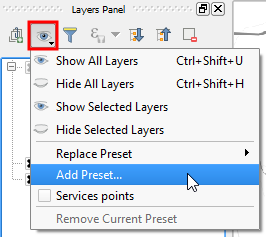

Now, that we have a new layer visibility combination, let's create another preset. In the Layers Panel:

You have created a new preset called Heatmap only.
Once you have finished, click Move to next step.